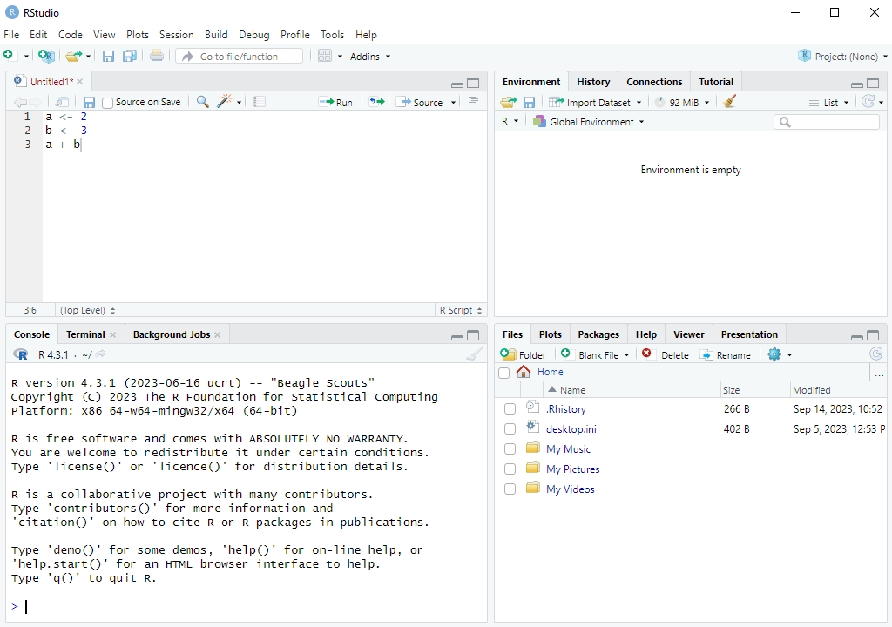

a <- 2
b <- 3
a + b7 R Scripts
Up to now we have been writing commands directly into the R console. This is all fine if all you want to do is try out a few different simple commands. However, when working on a project with some data you will often be executing many commands and it’s easy to lose track of what you are doing. It’s also very easy to make mistakes. R scripts are a solution to this problem. An R script is a text file where you can write all of your commands in the order you want them run, and then you can tell RStudio to run the entire file of commands. You can also ask it to only run part of the file. This has many advantages:
- If you have run 10 commands to calculate something and then afterwards you decide to change what happened in one of the earlier commands, you would often have type all the commands again. In an R script you would just need to edit the line with that command. So R scripts can save you a lot of time.
- You or anyone else can easily reproduce your work by re-running the R script.
- By having all the commands in a script you can more easily spot any mistakes you might have.
- It is a way of saving your work.
Therefore it’s best practice to write your commands in an R script.
7.1 Creating a New R Script
To get started, go to File \rightarrow New File \rightarrow R Script in RStudio. You can also use the Ctrl+Shift+N keyboard shortcut, or use the first toolbar button directly under File.
Note to Mac Users: The keyboard shortcut will be Cmd+Shift+N on a Mac. In general you will replace Ctrl with Cmd (and Alt with Option) in all keyboard shortcuts that follow.
Test it out by typing a few commands into the script:
Note: The Alt + - shortcut to type <- also works in R scripts.
Your code in the R script should look like this:

7.2 Running the Commands in an R Script
There are several different ways to run the commands in an R script.
7.2.1 Selecting Lines and Running
One way to run these lines is to do the following:
- Select the lines, either with your mouse or with the keyboard shortcut
Ctrl+A. - Running the selected lines, either with the
Runtoolbar button on top of the R script, or with the keyboard shortcutCtrl+Enter.
What is nice about this method is you can run a subset of the commands in your R script. Instead of selecting all the lines, you just select the lines you want to run. This can be useful if some of the lines in your code are slow to run and you don’t need to run those lines again.
7.2.2 Sourcing
7.2.2.1 Sourcing with Echo
Another way to run the entire script is to source the script. You can do this with the keyboard shortcut Ctrl+Shift+Enter or by clicking the down-arrow next to the Source button at the top of the script, and clicking “Source with Echo”.
With this approach you don’t need to select the lines first. It always runs the entire file. But keep in mind there is no way to run part of script with this method.
7.2.2.2 Sourcing without Echo
You will notice that when you run source, the source() command appears in the console with the option echo = TRUE. The echo option prints all of the commands and the output on the screen. It is also possible to source without echo which then only prints what you want it to. This can be useful if you have a very long script and only want to see the output of a few different things in it when running it. You can do this by clicking the drop-down option next to the Source button and clicking “Source”. You can also use the keyboard shortcut Ctrl+Shift+S.
If we try this using the example script above we will see that it does not print anything at all. We don’t see the output of a + b. To be able to print the output of a line on the screen when using source() without echo, we need to use the print() function. We need to change our script to be:
a <- 2
b <- 3
print(a + b)When we source the script without echo we then see the output:
[1] 57.3 Commenting in R
7.3.1 Commenting as Annotation
When writing an R script it is good practice to add comments throughout to explain what you are doing. This helps other people who are reading your code to understand what you are doing and your intentions. Most of all, though, it helps you to understand your code when you look back at it after a few months. To add a comment in R you simply need to type a # and anything you write after the # is not run by R. For example:
# Set values of a and b:
a <- 2
b <- 3
# Compute the sum of a and b and print:
print(a + b)[1] 5You can also add comments after a command on the same line. Everything before the # is run by R, and everything after and including the # is not run:
a <- 2 # set a equal to 2
b <- 3 # set b equal to 3
print(a + b) # Compute the sum of a and b and print:[1] 57.3.2 Commenting to Not Run Certain Commands
If you have written some commands but you don’t want to run them when you run/source your script, you can “comment them out”. You just put a # before each line you don’t want to run to turn them into “comments”. You can “comment out” many lines at the same time by selecting the lines you want to comment out and using the Ctrl+Shift+C shortcut (or by going to Code \rightarrow Comment/Uncomment Lines). If you want to “uncomment” these lines, you just need to select them and use the Ctrl+Shift+C shortcut again.